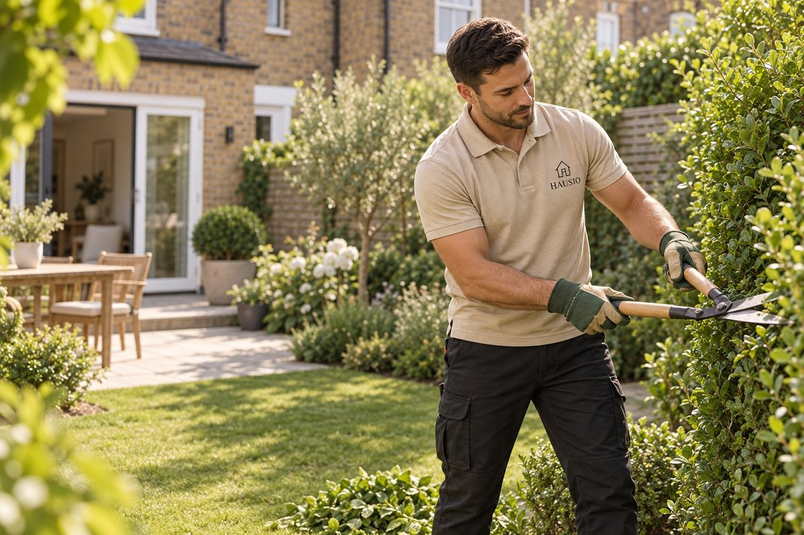

Guide · Garden Maintenance
Garden maintenance in London: a practical seasonal guide for smaller gardens.

Hausio provides one-off and regular garden maintenance across Greater London, including lawn mowing, edging, accessible hedge trimming, light pruning, weeding, border care, leaf collection and seasonal tidy-ups. The service is quoted for the garden because size, access, growth and green-waste volume change the time required.
Compact London gardens often need frequent light care more than occasional heavy work. A realistic plan keeps paths usable, plants within their space and maintenance visits predictable.
What garden maintenance includes
- Lawns and edges: mowing, edge trimming and agreed light seasonal care.
- Hedges and shrubs: accessible trimming, shaping, removal of dead growth and light pruning.
- Beds and borders: weeding, hoeing, tidying and basic care around established planting.
- Seasonal tidy-ups: leaf collection, cutting back suitable growth and preparing the garden for the next season.
- Regular visits: a repeat task list adjusted for growth and the time of year.
One-off tidy-up or regular gardener?
A one-off visit suits a garden that needs to be brought back under control before guests, a tenancy change or a season. Regular maintenance suits customers who want the lawn, edges, hedges and borders kept consistently neat.
Fortnightly visits can make sense during faster spring and summer growth. Monthly care may suit a smaller, slower-growing or low-maintenance garden. The right frequency depends on the planting and the finish you expect, so Hausio confirms it after reviewing recent photos.
A simple seasonal maintenance plan
Spring
Spring work usually starts with clearing winter debris, defining lawn edges, weeding beds and assessing shrubs before active growth. The task list should prioritise what needs room, light and access rather than cutting every plant in the same way.
Summer
Lawns and hedges may need more frequent attention. Visits focus on mowing, edges, controlled trimming, weeds and keeping paths and seating areas usable. Watering arrangements remain the customer's decision unless specifically included.
Autumn
Leaf collection, suitable cutting back and clearing paths become more important. This is also a good point to separate routine green waste from a larger garden-clearance job.
Winter
Growth slows, so the focus shifts to access, debris, storm damage visible from the ground and planning the next season. Major tree work and specialist climbing sit outside routine maintenance.
Garden maintenance versus garden clearance
Maintenance covers repeat care such as mowing, trimming, pruning and weeding. Clearance deals with a large initial volume: accumulated waste, unwanted outdoor items, dismantled materials or a garden that requires substantial cutting back. If both are needed, the quotation can separate the clearance from the ongoing maintenance plan. Hausio also has a dedicated garden clearance service.
What to send for a garden quote
Send recent wide photographs from several angles, close-ups of hedges or problem areas, the postcode and an approximate garden size. Show the route from the street to the garden, especially if tools and waste must pass through the home. Say whether there is an outdoor power point and how much green waste is already present.
The written quote should state the task list, whether the visit is one-off or regular, and how bagging and removal of green waste will be handled.
When a tree specialist is needed
Routine garden maintenance can cover accessible shrubs, hedges and light work on small trees from ground level. Large trees, protected trees, difficult branches and any work needing specialist climbing, permissions or advanced equipment require an appropriately qualified tree professional. Send photos so this can be identified before booking.
Arrange garden maintenance in London
Visit the Hausio garden maintenance page to see the service scope and request a one-off or regular quotation. Recent photos, access details and the result you want are the best starting point.
Quick answers
Garden Maintenance FAQ
What does Hausio garden maintenance include?
Hausio garden maintenance can include lawn mowing and edging, accessible hedge trimming, light pruning, weeding, border care, leaf collection and seasonal tidy-ups.
Does Hausio offer regular garden visits in London?
Yes. One-off, fortnightly or monthly visits can be quoted after the garden, access, seasonal growth and preferred level of finish have been reviewed.
Is green waste removal included?
Green waste bagging and removal can be included, but the amount and disposal requirement should be shown in the written quote. Large clearance jobs are handled separately from routine maintenance.
Want a garden that stays manageable?
Send recent photos, your postcode and whether you need a one-off tidy-up or regular visits. Hausio will prepare a garden-specific quote.
Request a garden quote